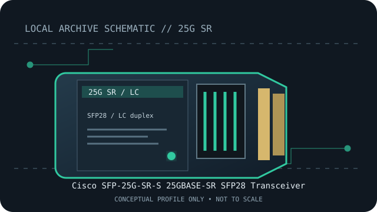

[ MODEL-SPECIFIC NETWORK HARDWARE RECORD ]
Cisco SFP-25G-SR-S 25GBASE-SR SFP28 Transceiver
25GBASE-SR short-reach SFP28 optic for multimode fiber. Exact PID, host qualification and optical channel specifications should be checked before deployment.

IDENTIFICATION: Match the module label, vendor part number and revision to the manufacturer's documentation. Nominal link rate and maximum reach are specifications, not measured throughput or a guarantee for every installed channel.
Model-specific specifications and compatibility
| Subcategory | SFP transceivers: optical and copper |
|---|---|
| Exact product/model | Cisco SFP-25G-SR-S 25GBASE-SR SFP28 Transceiver |
| Form factor | SFP28, hot-pluggable 25G optical module. |
| Optical interface | 25GBASE-SR, nominal 25Gb/s Ethernet at 850nm; Cisco specifies up to 70m on OM3 and 100m on OM4 multimode fiber. |
| Nominal rate (not measured) | 25Gb/s nominal link rate; stated optical reach is not measured payload throughput. |
| Wavelength and reach | 70m on OM3 / 100m on OM4 MMF (per Cisco product data sheet). |
| Connector and fiber type | Duplex LC; 850nm multimode fiber (OM3/OM4). |
| Host coding and compatibility caveat | Requires a host SFP28 cage and a platform/port that explicitly supports PID SFP-25G-SR-S at 25GbE. Cisco EEPROM recognition, qualification and FEC behavior are host- and software-dependent; verify the exact switch/router in Cisco’s transceiver matrix. A physically fitting SFP+ cage does not establish 25GbE operation. |
| Variant / deployment caveat | Do not confuse SFP-25G-SR-S with SFP-10/25G-LR-S or unqualified third-party-coded modules. Match SR optics and fiber grade at both link ends. |
| Measured throughput | No bench result is claimed. Actual payload throughput depends on the host, link partner, protocol overhead and test method. |
Host qualification and installation notes
Requires a host SFP28 cage and a platform/port that explicitly supports PID SFP-25G-SR-S at 25GbE. Cisco EEPROM recognition, qualification and FEC behavior are host- and software-dependent; verify the exact switch/router in Cisco’s transceiver matrix. A physically fitting SFP+ cage does not establish 25GbE operation.
Do not confuse SFP-25G-SR-S with SFP-10/25G-LR-S or unqualified third-party-coded modules. Match SR optics and fiber grade at both link ends.
Check both endpoint modules, fiber grade, polarity, connector cleanliness and host port configuration. Verify the exact transceiver PID and revision against the current manufacturer compatibility source before placing the link in service.
Archival, ESD and fiber-safety notes
Record the exact PID, hardware revision, host port, firmware/software release and available digital optical diagnostics. Store the module in ESD-safe packaging with dust caps fitted. Never look into an active fiber or transceiver aperture.
Manufacturer sources
- Cisco 25GBASE SFP28 Modules Data SheetCisco product-family specifications and supported 25G SFP28 optics.
- Cisco Transceiver Module Group (TMG) MatrixCisco host-platform, software-release and transceiver PID qualification lookup.
Manufacturer compatibility varies by host, release, module coding and product revision. Consult the exact product source and current host qualification before use.